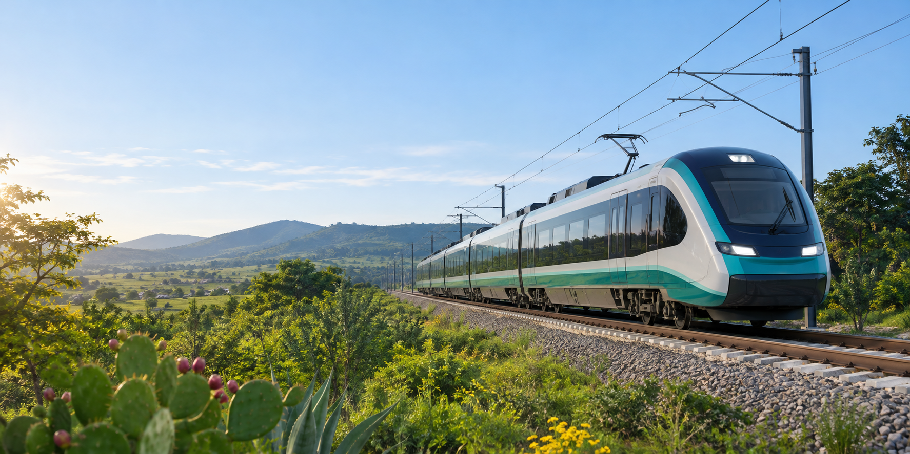
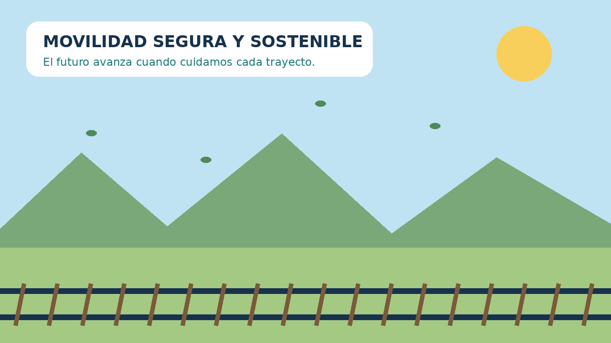
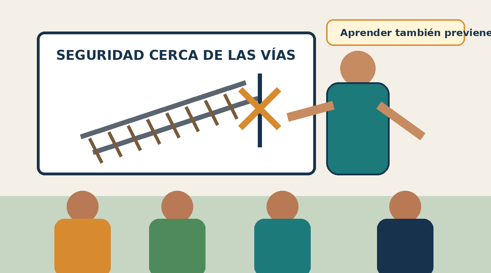
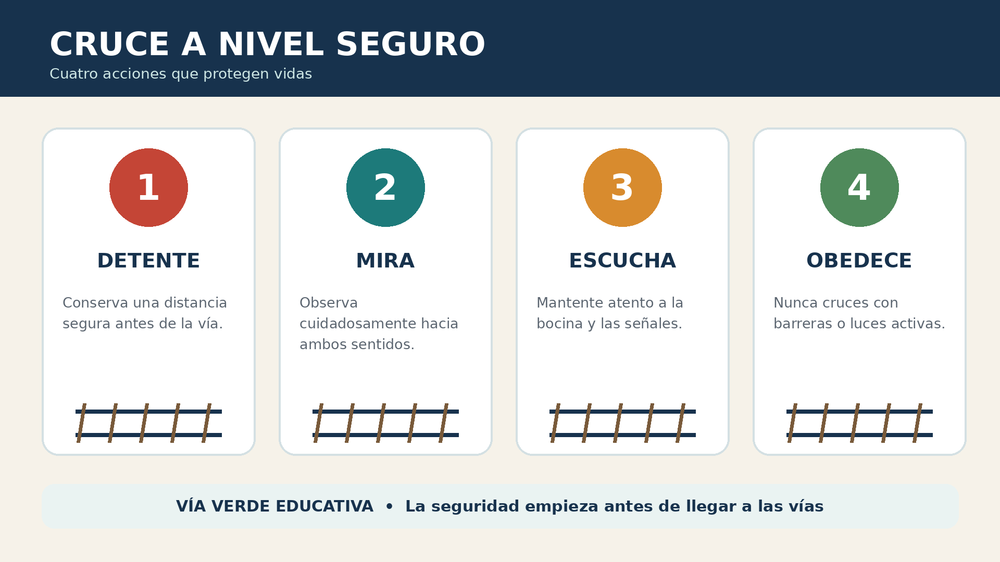

Misión
Crear y difundir contenidos educativos accesibles que promuevan conductas seguras alrededor de la infraestructura ferroviaria y fortalezcan una cultura de movilidad responsable.

Movilidad segura · futuro sostenible
Recursos multimedia de autoría propia para fortalecer la seguridad ferroviaria, la movilidad sostenible y la educación comunitaria.
Empresa
Empresa: Vía Verde Educativa
Vía Verde Educativa es una asociación civil ficticia que desarrolla materiales de prevención, orientación y sensibilización mediante recursos digitales y multimedia.
Crear y difundir contenidos educativos accesibles que promuevan conductas seguras alrededor de la infraestructura ferroviaria y fortalezcan una cultura de movilidad responsable.
Ser un referente educativo digital en México para la prevención ferroviaria y la formación comunitaria en movilidad sostenible.
Desarrollar materiales claros, útiles, actualizados y accesibles, procurando calidad visual, navegación sencilla y mejora continua a partir de la retroalimentación de los usuarios.
El proyecto tiene alcance educativo digital y puede utilizarse desde cualquier lugar con acceso a Internet.
Catálogo de productos
Infografía, video educativo y guía breve sobre las acciones correctas antes de cruzar una vía.
Descargar infografíaSesión de sensibilización para escuelas y comunidades sobre prevención, señales y convivencia segura con la vía.
Solicitar informaciónAnimación y audio ambiental para introducir conceptos de transporte ferroviario y sostenibilidad.
Ver contenidoContenido multimedia
Video educativo de autoría propia que resume tres acciones: detenerse, observar y escuchar.

Animación original acompañada por una pieza sonora ambiental.


Login
Este acceso es una demostración académica del espacio de usuario solicitado en la actividad. No almacena contraseñas ni datos personales.
Preguntas frecuentes
Sí. El sitio es un proyecto académico y sus recursos se ofrecen con fines educativos.
Sí, siempre que se utilice con fines educativos y se reconozca la autoría del proyecto.
No. Es una organización ficticia desarrollada como caso académico, pero su estructura y contenidos se plantean de manera realista.
Utiliza el formulario de contacto al final del sitio e indica escuela, comunidad y tema de interés.
Recursos descargables
Contáctame
¿Quieres llevar un taller a tu escuela o comunidad? Escríbenos.